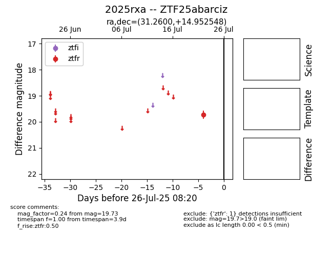

Target 2025rxa at 2025-07-26 08:20, see:
FINK: fink-portal.org/2025rxa
Lasair: lasair-ztf.lsst.ac.uk/objects/2025rxa
ALeRCE: alerce.online/object/2025rxa
TNS: wis-tns.org/object/2025rxa
YSE: ziggy.ucolick.org/yse/transient_detail/2025rxa
alt names
ZTF25abarciz (ztf,fink)
2025rxa (tns,yse)
coordinates:
equatorial (ra, dec) = (31.2600,+14.95255)
galactic (l, b) = (148.1469,-44.28586)
photometry
last ztfr=19.73
1 ztfr detections
